本文件把音乐阳台双角色等身动态玩偶（白熊船长主唱、棕熊海盗伴奏）到目前为止的
所有图和所有文字合并成一份，方便你先整体过一遍、圈出要改的，再告诉我下一步怎么做。
文件夹里的图片就是本页嵌入的这些图；*.stl 文件是可直接打印的分件（详见 §8）。
项目是江上城堡右侧翼二层外凸阳台上两只等身动态玩偶：白熊船长（持麦演唱，站立 1.70 m）、 棕熊海盗（弹吉他伴奏，站立 1.60 m）。观众从楼下广场仰视，距离 15～25 米，看到的是剪影＋节奏。
这是目前出的所有外观方向，含「城堡版」主推三张，以及更早的栏杆风格四张＋森林树屋备选。你先挑方向。
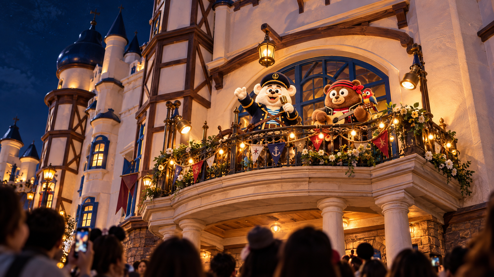
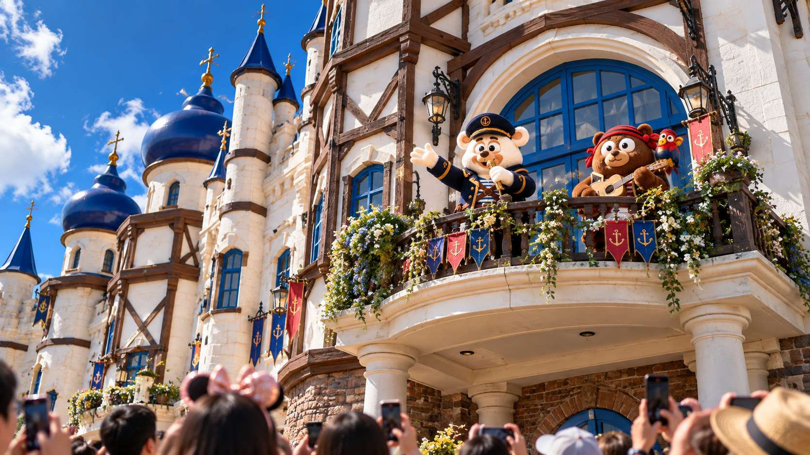
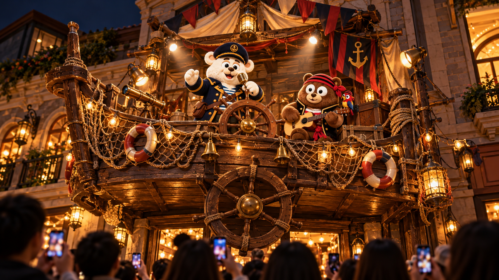
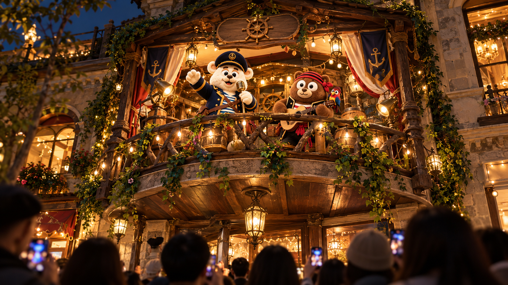
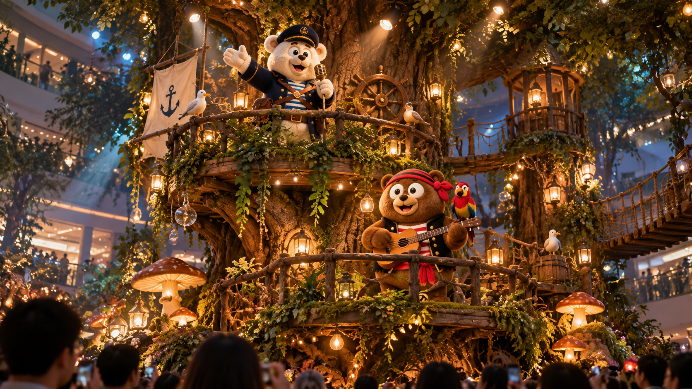
动作越多越贵、越容易坏，所以按"观众能不能感知"分级。下面两张是把你的 IP 形象图直接画上可动关节分解（白熊 6 处、棕熊 5 处）。
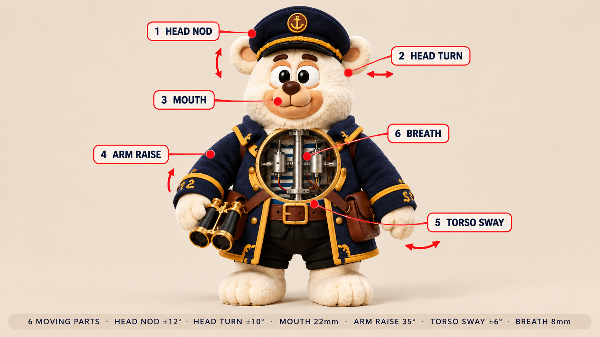
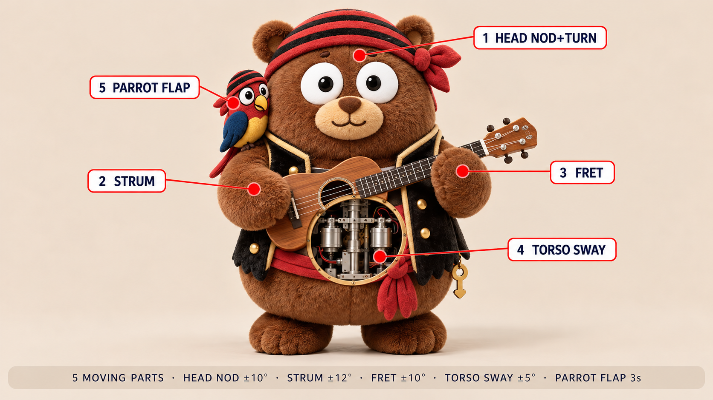
| 动作 | 幅度 | 观众感知 | 优先级 |
|---|---|---|---|
| ① 头部上下点头（打拍子） | ±12° | 极强 | 必做 |
| ② 头部左右轻摆 | ±10° | 强 | 必做 |
| ③ 嘴部开合（唱歌口型） | 张 0～22 mm | 强（近看必需） | 必做 |
| ④ 持麦手臂上举＋轻微挥动 | 举 0～35° | 强 | 必做 |
| ⑤ 躯干左右摇摆（打拍子） | ±6° | 中 | 必做 |
| ⑥ 呼吸起伏（胸腔微升降） | 8 mm | 中（近看才有） | 建议 |
| 动作 | 幅度 | 优先级 |
|---|---|---|
| ① 头部点头＋轻摆 | ±10° | 必做 |
| ② 右手拨弦（小臂小幅摆动） | ±12° | 必做（一眼看出"在弹琴"） |
| ③ 左手按弦（左手小臂微移） | ±10° | 建议 |
| ④ 躯干随节奏侧摆 | ±5° | 必做 |
| ⑤ 肩上鹦鹉偶尔抖翅 | 一次 3 秒 | 锦上添花，可后加 |
合计 11 个独立动作 → 约 14～16 个执行器。 刻意不驱动手指、肘、脚、骨盆、腰腹、帽子围巾——这些地方加电机要多花钱多加故障点，游客根本看不出来。
下面两张把机构按熊的真实身高比例、放在解剖位置上：底板落在胯部、胸腔框在胸口、头部机构在颈口、肩臂机构在肩高。整台机器 1.32 m，全部藏在毛皮里面，外面看不出有机械。
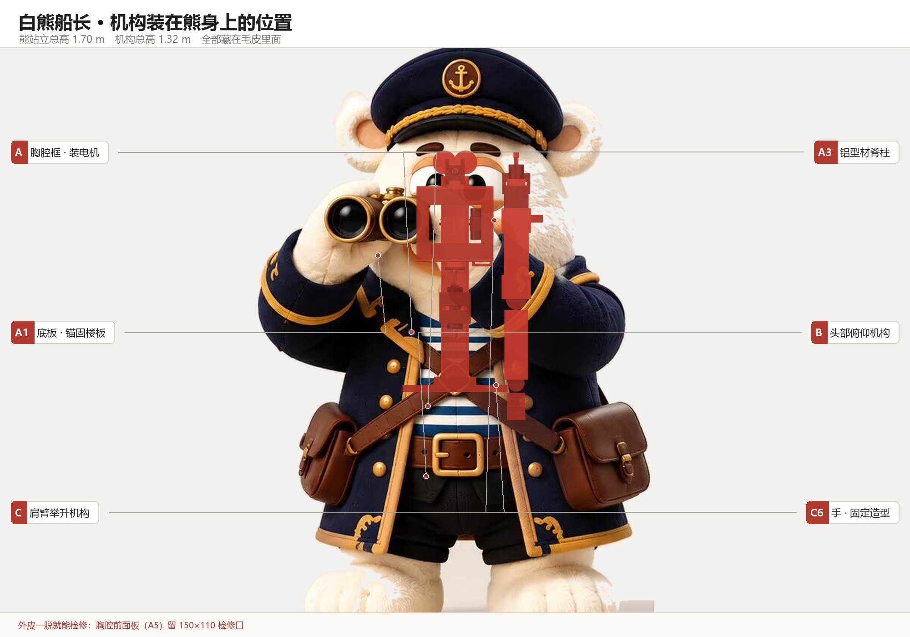
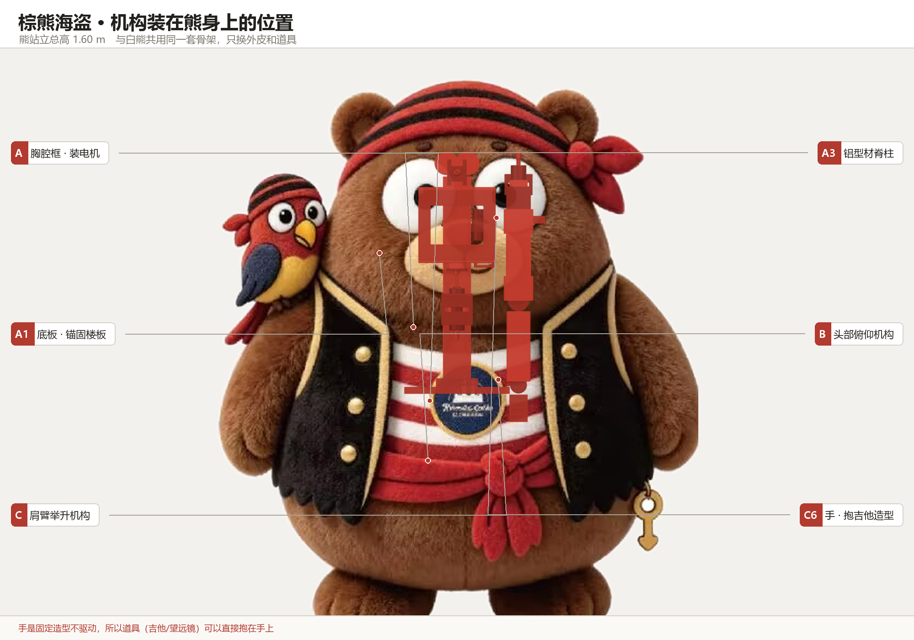
| 方案 | 形象表现 | 户外耐用 | 成本 | 判断 |
|---|---|---|---|---|
| 24V 直流无刷减速执行器（大号舵机） | 好，可保持姿态、掉电不倒 | 好（IP65 可选） | 中 | ✅ 推荐 |
| 液压驱动 | 力量大、有缓冲 | 差（漏油、冬天固化） | 高 | ❌ 不适合户外 |
| 气动 | 爆发力强 | 中（湿气影响气路） | 中高 | ❌ 维护麻烦 |
| 纯绳驱动＋配重 | 便宜、幅度大 | 中 | 低 | ❌ 表演质感差 |
| 层 | 作用 | 关键点 |
|---|---|---|
| ① 骨架 | 承力 | 80×40 铝型材脊柱（长 576 mm）＋ 铝型材胸腔框（220×160×200）＋ 20 mm 钢板底板（8 颗 M16 穿透锚固阳台楼板，不是压在地板上） |
| ② 动件 | 各关节 | 头部俯仰/摆头、躯干摇、举臂、嘴开合各配执行器；球头连杆传动；手/肘/脚不驱动 |
| ③ 外皮 | 像不像 IP | 软硬混合分件皮（详见 §5），必须整片可脱下、关节留褶皱余量、B1 级阻燃 |
| ④ 控制 | 让动作跟音乐 | 定时+触发盒子，不 AI（详见 §6） |
推荐分件软硬混合外皮，不是整个人偶整体一层硅胶。一只熊外皮约 8～12 件。
| 部位 | 材料 | 厚度 | 做法 |
|---|---|---|---|
| 头部（上下两片） | 硅胶翻模 | 3～4 mm | 内侧带定位柱；嘴部开口处做可开合柔性帘 |
| 躯干 | 植绒布＋薄硅胶复合 | 3 mm | 布面出布料质感，硅胶做护边 |
| 四肢 | 硅胶翻模 | 3 mm | 关节处做褶皱/布料堆叠，转头时自然盖住缝 |
| 眼睛 | 玻璃/亚克力球＋手工上色 | — | 必须实心球，不能画上去 |
| 鹦鹉 | 轻质雕塑＋玻璃 | — | 可拆换 |
不要上"人工智能"，用一个可靠的定时＋触发盒子。
| 层级 | 做什么 | 怎么改 |
|---|---|---|
| ① 动作时间表 | 一首歌＝一串带时间戳的动作 | 改 JSON 文件，工程师远程改 |
| ② 音量驱动口型 | 麦克风采现场音量，映射嘴开合度 | 自动，无需改 |
| ③ 随机插入 | 每隔 1～2 分钟插"抖羽/歪头/换手拿麦"等小动作 | 概率参数 |
为什么用时间表而不是"跟着音乐自动识别"：自动节拍识别会每首歌跑偏一次，累积误差后玩偶和音乐对不上、掉戏。
时间表是排练定死的，100% 可靠。想省事就每天开演前让它循环同一首曲子，时间表对齐这一首就行。
控制柜放阳台角落设备柜（不外露），含 24V 电源（带 UPS）、主控板（工业级单片机/PLC）、音频播放器＋音量采集、急停按钮（放楼下服务间）。
动作全靠机械限位，不靠软件判断——让一个人撞栏杆或掰手时，执行器顶不动、过不去，只会自己停住。
| 动作 | 上限 | 怎么限制 |
|---|---|---|
| 持麦臂上举 | 35° 停住撞限位 | 机械硬限位块 |
| 躯干摇摆 | ±6° | 机械限位 |
| 头部 | ±12° | 机械限位 |
| 嘴部 | 张 22 mm | 机械限位 |
| 户外专项 | 做法 |
|---|---|
| 防水 | 执行器 IP65＋、接线盒 IP66、电缆防水接头（普通舵机一场雨就废） |
| 防雨罩 | 头顶可开合遮雨顶棚，下雨合上；外皮本身不能长期淋 |
| 防风 | 楼板锚栓固定；风速＞12 m/s 自动归位停演 |
| 防日照 | 骨架内通风；控制柜放阴处加遮阳 |
| 断电姿态 | UPS 保持最后姿势 30 分钟后缓慢归位待机，不突然倒 |
| 防夹手 / 攀爬 | 连杆夹点加护套；玩偶距栏杆 ≥800 mm；阳台不放可攀登家具 |
这部分是能落地、能 3D 打印、能装电机的真实分件，不是效果图。两只熊共用同一套骨架，共
4 个总成、67 个零件对象、51 个独立 STL。下面每张图都是三维真实几何，尺寸单位毫米，可直接切件打印。
本文件夹内的 *.stl 文件名就是编号＋中文名（如 A7_躯干限位块_可调.stl）。
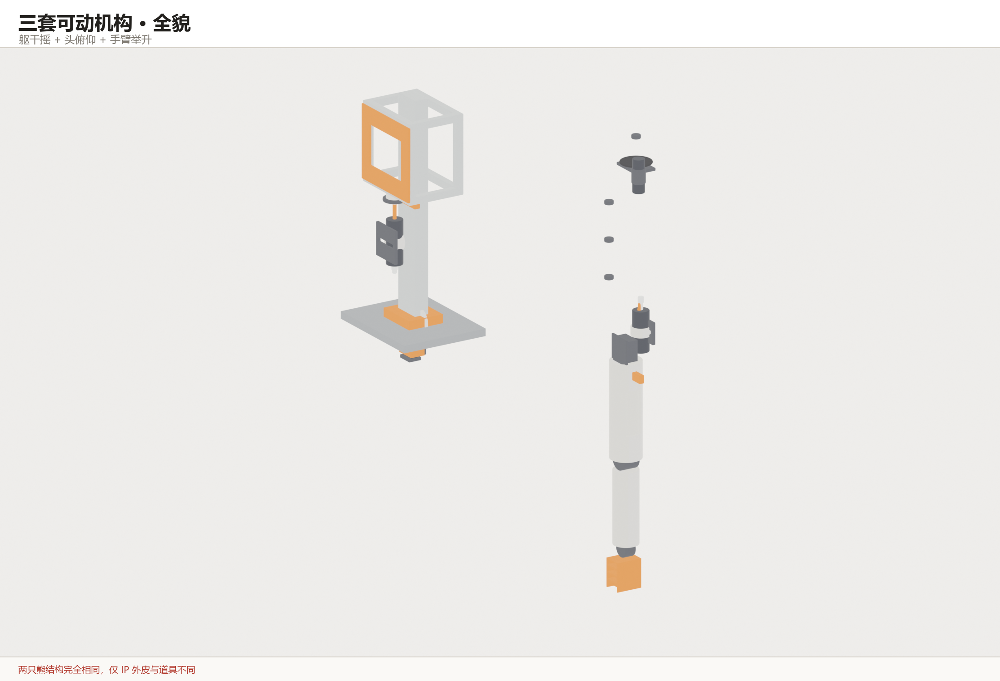
分件图上每个红色编号就是一个独立 STL，照编号去文件夹里取文件即可。
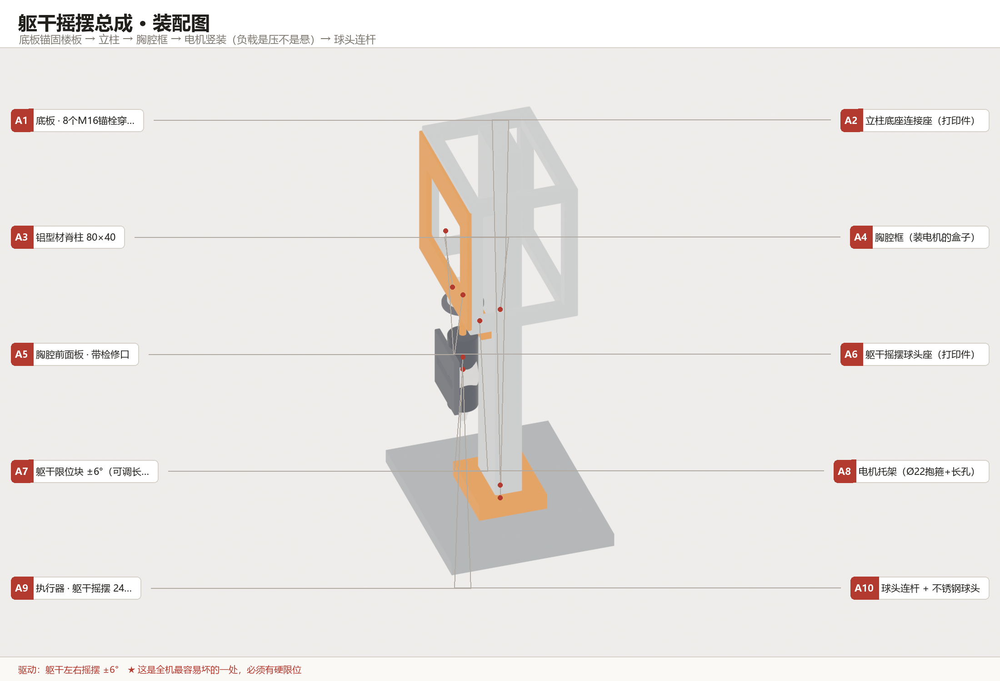
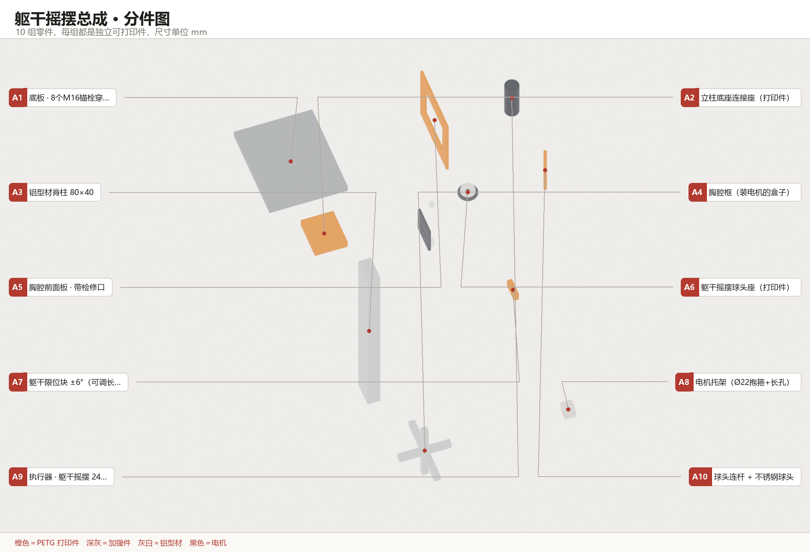
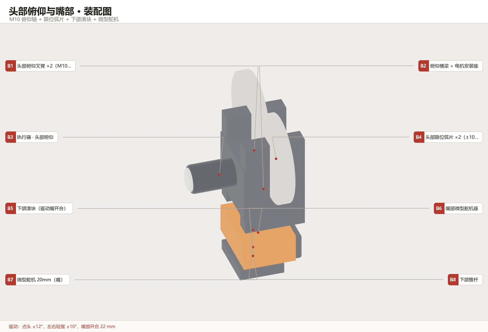
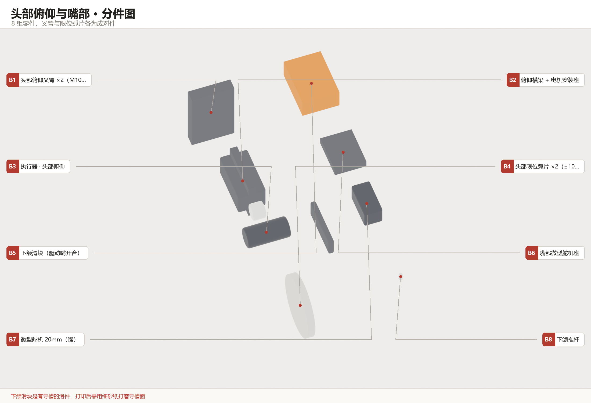
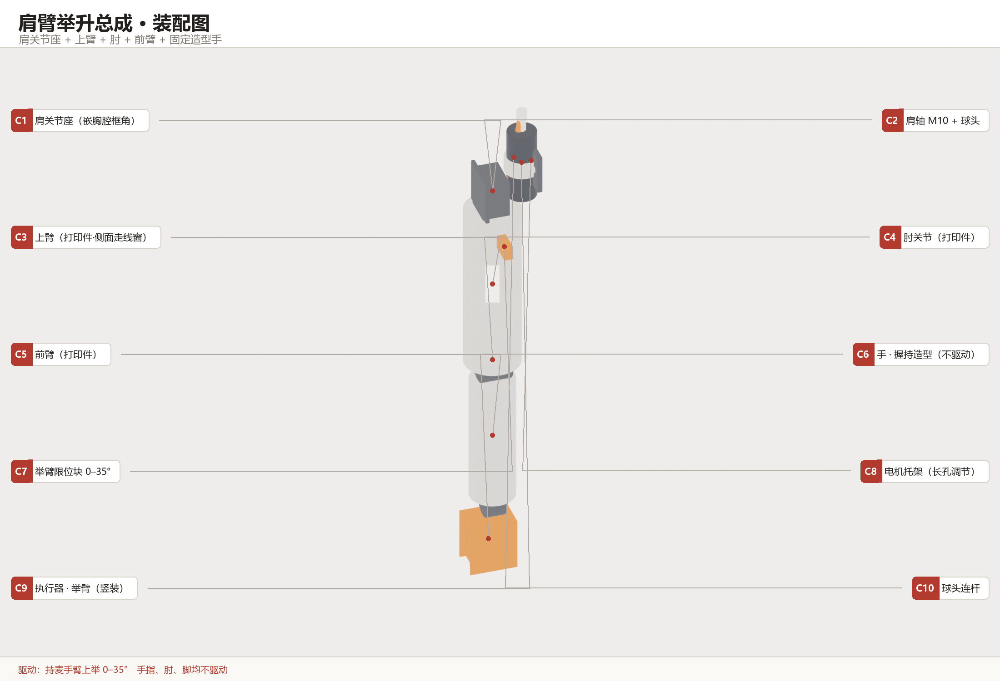
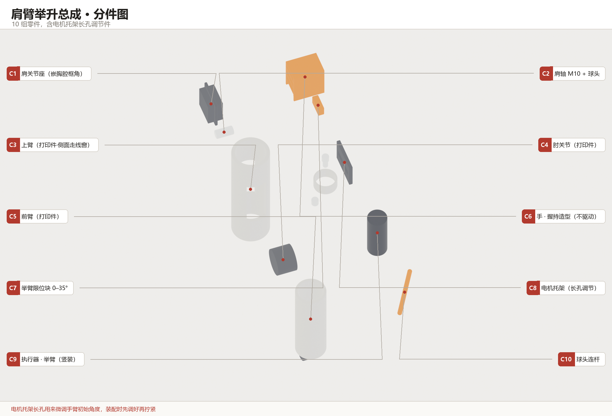
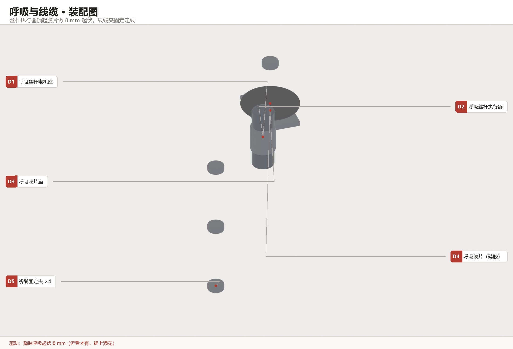
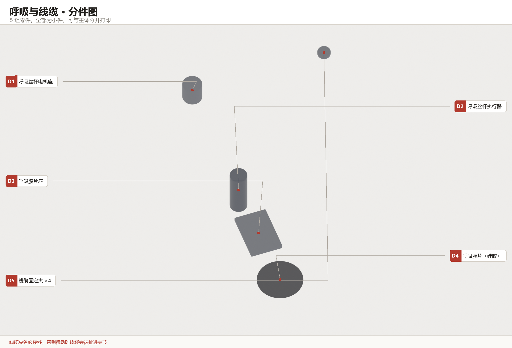
| 编号 | 中文名称 | 数量 | 材料/工艺 | 关键尺寸与说明 |
|---|---|---|---|---|
| A1 | 底板 · 锚固阳台楼板 | 1 | 镀锌钢 | 300×240×20，8 个 M16 锚栓穿透楼板孔 Ø9，中央 Ø26 过线孔 |
| A2 | 立柱底座连接座 | 1 | PETG 打印 | 120×100×24，内槽适配 80×40 型材，4 个 M8 孔 Ø4.4 |
| A3 | 铝型材脊柱 | 1 | 铝型材 80×40 | 长 576，承受全部弯矩，不可用打印件替代 |
| A4 | 胸腔框（装电机的盒子） | 1 套 | 铝型材 | 220×160×200，四立柱＋七横梁，前面开口检修 |
| A5 | 胸腔前面板 · 带检修口 | 1 | PETG 打印 | 220×8×200，开 150×110 检修口，方便现场换电机 |
| A6 | 躯干摇摆球头座（含法兰） | 1 套 | PETG 打印 | 座体 Ø22、球头孔 Ø8.2、高 34，配 Ø30 法兰固定 |
| A7 | 躯干限位块 · 可调 | 1 | PETG 打印 | 60×16×26，带长条槽——把 ±6° 硬限位调准 |
| A8 | 电机托架（抱箍＋长孔背板） | 1 套 | PETG 打印 | 抱箍 Ø22.2 夹 Ø26 电机，长孔微调初始角 |
| A9 | 执行器 · 躯干摇摆 | 1 | 24V 自锁电机 | Ø22×120，输出轴 Ø6；断电自锁，不外购配重 |
| A10 | 球头连杆＋不锈钢球头 | 1 | 钢件 | 连杆带 Ø8 球头，机构精密庄严 |
| B1 | 头部俯仰叉臂 | 2 | PETG 打印 | M10 轴孔 Ø5.2，成对夹住头部 |
| B2 | 俯仰横梁＋电机座 | 1 套 | PETG 打印 | 轴套孔 Ø11.2，配合 B1 的 M10 轴 |
| B3 | 执行器 · 头部俯仰（含联轴器） | 1 | 电机 | Ø11×46 小型，配专用联轴器，避免中空轴打滑 |
| B4 | 头部限位弧片（左右各一） | 2 | PETG 打印 | Ø34 / Ø22 弧片，限定点头 ±12° 与轻摆 ±10° |
| B5 | 下颌滑块＋下颌夹板 | 1 套 | PETG 打印 | 滑块 56×40×22 带导槽，推杆孔 Ø4.2；导槽需砂纸打磨 |
| B6 | 嘴部舵机座 | 1 | PETG 打印 | 夹 6V 微型舵机，藏在颏部内侧 |
| B7 | 微型舵机 · 嘴部 | 1 | 6V 金属齿舵机 | 40×20×20。全身唯一用舵机的动作，嘴开合 0–22 mm |
| B8 | 推杆 · 下颌 | 1 | 钢件 | Ø4，推力传给下颌滑块 |
| C1 | 肩关节座＋安装板 | 1 套 | PETG 打印 | 轴孔 Ø11.2，配合 C2 的 M10 肩轴 |
| C2 | 肩轴 M10 | 1 | 标准件 | M10，长度按实际装配配 |
| C3 | 上臂（侧面走线） | 1 | PETG 打印 | 外 Ø42、内孔 Ø34，开减重窗与侧走线孔 |
| C4 | 肘关节 | 1 | PETG 打印 | 只造型不驱动，固定在 5–8° 微屈 |
| C5 | 前臂＋腕 | 1 | PETG 打印 | 握持姿态按道具外形定制 |
| C6 | 手 · 握持造型 | 1 | PETG 打印 | 固定造型不驱动，少一组电机 |
| C7 | 举臂限位块 | 1 | PETG 打印 | 40×14×22，硬限位 0–35° |
| C8 | 电机托架（长孔调节） | 1 套 | PETG 打印 | 长孔微调手臂初始角 |
| C9 | 执行器 · 举臂（竖装） | 1 | 24V 自锁电机 | 竖装向下拉，负载是压不是悬 |
| C10 | 球头连杆＋不锈钢球头 | 1 | 钢件 | 接 C9 与 C3 举臂点 |
| D1 | 呼吸丝杆电机座 | 1 | PETG 打印 | 固定在胸腔底部 |
| D2 | 呼吸丝杆执行器 | 1 | 丝杆电机 | 行程 8 mm，往复即可 |
| D3 | 呼吸膜片座 | 1 | PETG 打印 | 托住膜片边缘 |
| D4 | 呼吸膜片 · 硅胶 | 1 | 硅胶 | Ø42×4，外购或硅胶垫裁切 |
| D5 | 线缆固定夹 | 4 | PETG 打印 | Ø12×10 夹孔。必须四个全装，否则线缆被扯进关节 |
| — | M16 锚栓 | 8 | 标准件 | 把底板锚固穿透阳台楼板，唯一承力固定点 |
下面两张表是同一项目的不同档次，以及一条"卡预算"的特别路线。初版曾误按博物馆级写实硅胶定价（虚高 2～3 倍），已重算，以本版为准。
| 档次 | 做法 | 造价 |
|---|---|---|
| ① 省钱版 | 玻璃钢外壳＋植绒布面（不做硅胶皮），6 个核心动作 | 35 ～ 55 万 |
| ② 推荐版（甜点区） | PU＋植绒复合皮（非纯硅胶），11 个动作，可开合遮雨棚 | 55 ～ 85 万 |
| ③ 硅胶版 | 简化硅胶皮（卡通化），11 个动作 | 85 ～ 130 万 |
| ④ 博物馆级写实 | 铂金硅胶＋植毛发＋全手绘写实五官 | 150 万以上 |
卡通熊在 15 米外被看，观众看的是剪影、配色、动作——写实硅胶的手感/毛发/皮肤纹理在这个距离完全看不见， 把钱花在那上面是浪费。合理区间就是 双角色 55～85 万（推荐档），省着做 35～55 万。
| 决策 | 省多少 | 代价 |
|---|---|---|
| 只做一只熊（主唱），另一只做低台花坛 | 35%～40% | 现场少一只熊 |
| 外皮改 PU＋植绒，不用纯硅胶 | 30%～40% | 质感略降，15 米外看不出 |
| 动作从 11 个减到 8 个 | 12% | 去掉呼吸、鹦鹉抖翅、左手按弦 |
| 外皮做整只连体，不分十几件 | 15% | 换皮麻烦 |
如果预算卡死在 5 万，有一条完全不同的路可以摆上桌——高密度 EPS 泡沫雕刻外壳＋轻金属骨架＋电机驱动，每只 5 个动作。
| 维度 | 说明 |
|---|---|
| 造价 | 约 4.7 万（含泡沫雕刻 1.3 万、表面处理 0.9 万、骨架 0.7 万、电机 0.55 万、电控 0.2 万、防雨罩 0.3 万、安装调试 0.45 万、不可预见 0.3 万） |
| 优势 | 极轻（约 15 kg/只，对楼板几乎无荷载、锚固要求极低）；工期短（3～4 周）；摔不坏；造型自由 |
| 最大短板 | 户外寿命只有 6～18 个月，一年左右要重做外壳；近看偏廉价 |
| 硬要求 | 外壳必须分 9～12 块＋柔性关节（否则一动就裂）；密度≥25 kg/m³；B1 级阻燃；三道抗 UV 涂层；电机 IP65 盒内；步进电机装机械零位限位 |
预算硬卡 30 万内可考虑：用现成人形机器人当"骨盆＋手臂"，外面套定制布偶服。造价 25～40 万，但风险高——布偶服与机器人动作不匹配会撕破，防水是短板，穿旧了比动作少几度更致命。除非预算硬卡死，否则不建议。
前期设计这部分价值最大、几乎零成本，而且能帮后面报价收敛 20%～30%。
| 我能做 | 用途 |
|---|---|
| ① 外皮拆件方案 | 把整只熊拆成外皮件＋骨架件＋关节件，给分缝位置、厚度、脱模斜度、卡扣位，逐件导 STL/STEP |
| ② 动作可行性验证（最值钱） | 在三维里真把 11 个动作跑一遍，查穿模、皮被顶破、摇摆撕开、限位够不够 |
| ③ 动作预览动画 | 几秒动画让客户没造之前就看到动起来 |
| ④ 骨架与连杆布局图 | 马达装哪、连杆怎么连、执行器朝向、限位块位置，画成施工级 |
| ⑤ 分件 3D 打印预览 | 先出低精度 STL 打粗样看比例 |
| ⑥ 干涉与安全检查 | 手臂扫不扫栏杆、观众伸手够得着什么 |
约 5～7 个月（IP 定稿拖延可达 8～9 个月）。关键里程碑：场地确认（1–2 周）→ IP 定稿（2–4 周）→ 报价合同（1–2 周）→ POC 样机（6–8 周，最关键不可跳过） → 施工图（3–4 周）→ 外皮打样（4–6 周）→ 骨架+开模（8–12 周）→ 集成联调（4–6 周）→ 安装（1–2 周）→ 72 小时验收（1 周）。
| 风险 | 后果 | 应对 |
|---|---|---|
| ① IP 造型还原度不足 | 客户不认、做完返工 | 先做头部＋手 1:1 小样给客户签字，签字后再开整套模 |
| ② 外皮进水/发霉/掉毛 | 一个雨季报废 | 可开合遮雨棚；可整片脱下清洗；耐候硅胶＋阻燃布 |
| ③ 阳台楼板不能锚固 | 大风天倾覆风险 | 第 1 步就查；不能锚则改配重底座＋围栏限位 |
| ④ 噪声扰民 | 被要求停演 | 静音齿轮＋蜗轮减速；夜间降幅度 |
| ⑤ 断电/故障后姿态难看 | "熊僵在半空"事故 | UPS 保持姿态；绝对位置记忆；手动归位流程 |
| # | 做什么 | 找谁 | 为什么现在做 |
|---|---|---|---|
| ① | 把《楼板六问表》发给物业/土建 | 物业工程部 | 最长的一条路径，越早问越好 |
| ② | 催客户出 IP 造型设定图（三视图＋配色表） | IP 方 | 最容易拖延的一环，早一周早一周 |
| ③ | 从外观方向里挑定（或再深化） | 客户决策人 | 定不下来后面全动不了 |
| ④ | 联系 2～3 家舞台机械厂，问有没有户外多自由度动态玩偶案例 | 网上/本地 | 先摸清市场，别急着定 |
| # | 要问什么 | 为什么关键 |
|---|---|---|
| 1 | 楼板结构厚度 mm？钢筋混凝土还是预制板？ | 决定能不能打锚、锚栓多深 |
| 2 | 允许活荷载 kg/m²？我们打算压 250 kg/m² | 超载要加固，是钱的大头 |
| 3 | 能否钻孔打锚栓？有无"禁止打孔"标注？ | 不能锚只能配重，底座更笨重 |
| 4 | 排水口/地漏在哪？ | 底座不能堵地漏，否则下雨积水 |
| 5 | 电源点位在哪？能否引一路三相电？ | 执行器用 24V 大电流直流，需整流 |
| 6 | 营业时间与噪音投诉电话？ | 决定演出时段与降噪 |
另问：需不需要消防/装修/招牌报批？需不需要夜间施工许可？如不能打锚 → 改"配重＋半围栏"，代价是底座体积明显变大。
| 关节 | 机械实现 | 幅度 / 注意 |
|---|---|---|
| 头部下点头 | 执行器胸腔内垂直装，短连杆推头顶板 | ±12° |
| 头部左右摆 | 执行器胸腔内水平装，连杆推头部支架 | ±10° |
| 躯干左右摇 | 执行器骨盆下方横向装，球头连杆上连胸腔 | ±6°，最容易坏，务必加机械限位 |
| 持麦臂上举 | 执行器竖装胸腔内，从上往下拉前臂 | 0–35°，肘部不单独驱动 |
| 嘴开合 | 1 个微型舵机在颏部，推滑块带下颌板 | 0–22 mm，需与音量联动 |
| 拨弦手 | 1 个执行器在前臂内，短连杆 | ±12°，手指固定造型不驱动 |